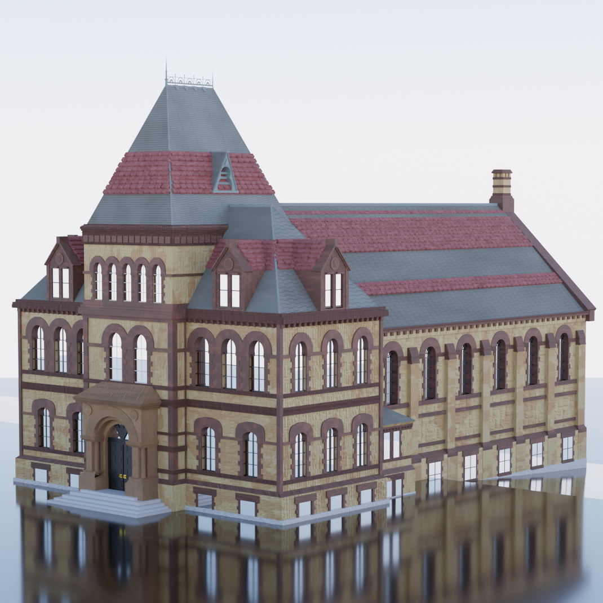
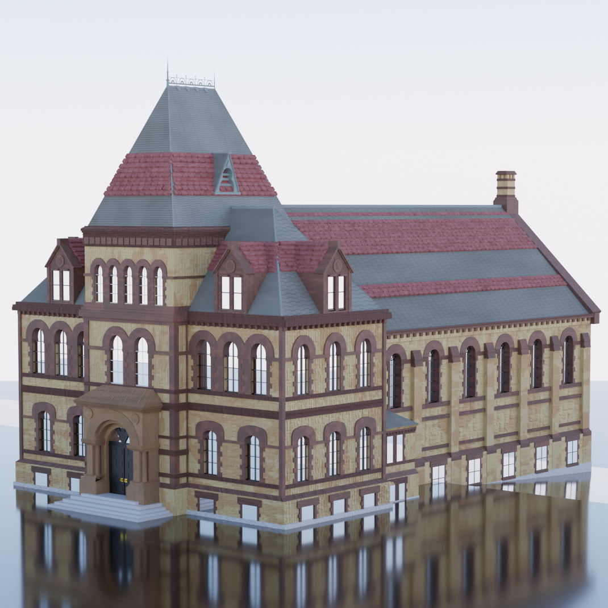

Tyler Gurth
Brown Univeristy, co 2025
About Me
19 yrs old, he/him.
Hi! My name is Tyler Gurth, and I am currently double majoring in Computer Science and History of Art and Architecture at Brown University. I also Head TA introductory computer science classes here.
I am versed in Python, Java, HTML, CSS, JavaScript, and Typescript. At Brown, I'm in the graphics and AI track.
My interests lie in game development, software engineering, UI/UX, and my research interests lie in art through artificial intelligence, and art identification through AI.
Feel free to reach out on any of my socials at any time, I am always up to connect! Or, email me!
Find me on my socials! LinkedIn Github
Projects
The Virtual Rosetta (Research)
The Virtual Rosetta was a project I worked on in the summer of 2022. It involved using scientific Python libraries to create visualization methods of a corpus of 4000 woodblock prints from Vietnam. Read more about it here: Research Poster
Technical Details
- Generated serialized matrices, minimum spanning trees, and force directed graphs using Python science libraries like SciPy, Sci-Kit Learn, and Pandas.
- Researched effective methods for dimensional reduction data visualization such as T-SNE.
- Programmed Python web scraping scripts with BeautifulSoup to convert the HTML corpus of data into PNG types and compile datasets.
- Visualized complex data in actionable graphs using PyPlot, revealing qualitative trends.


Escape Room Web Panel
The Escape Garden State Web Panel was a project I made for my previous employer, an escape room company in New Jersey. The site replaced an old, out-dated subscription site with a customized web app for the needs of the company.
Technical Details
- Utilized Google Firebase as storage, authentication, and database for the project.
- Programmed custom tools for the app, including scripting time functions and game features with Javascript.
- Developed utils for statistic tracking, to be used for further adveritsiing and data analysis.
- Designed, and created with original CSS, a GUI for employees to run the escape rooms.


Scrappy
Scrappy is a React social media web app I made with a team in my software engineering class at Brown. It combines the best aspects of photo sharing apps with social media, forming a sentimental and reflective view into a user's life.
Technical Details
- Used React TypeScript Framework to build out the components of the site, coupled with React Router to create a navigable state system.
- Connected with Google Authentication API to compose a login service and security.
- Developed a MongoDB Java database, and uploaded photos to AWS as storage.
- Personally programmed an NLP sorting algorithm using English feature vectors to sort posts based on Hashtags.
Experience
Head Teaching Assistant, Brown University Computer Science
I serve as a Head Teaching Assistant for Brown CS' class on Discrete Structures and Probability. Within the proof based class, I work on grading, communicating with students, and managing a staff of 26 TAs.
Technical Director, Escape Garden State NJ
I developed and designed a new escape room web app with Vite.js and Google Firebase database. I also acted as a tech consultant for the staff, and made helpful util systems, like a javascript Discord bot, and math utils for calculating scores and times.
Personal 3D Project Gallery


 
